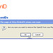

A Recipe for OpenID-Enabling Your Site
Prepared by Joseph Smarr at Plaxo on July 18, 2007.
This is a step-by-step tutorial guide for implementing OpenID
consumer-side support with a web site that already has users with
accounts. It will explain how to easily let new users sign up for an
account on your site using their OpenID URL and how to let existing
users attach their OpenID(s) so they can sign in using them.
I developed this guide by talking to fellow OpenID developers at the Internet Identity Workshop and elsewhere, and by implementing OpenID support for Plaxo using these instructions. I've also posted detailed screenshots
of Plaxo's implementation for reference. I've intended for this
guide to be clear and complete and to follow best-practices, but if you
have any questions or feedback, please let me know at or by posting a comment on Plaxo's blog.
This guide may look a bit long, but my hope is you can just follow
it straight through without thinking much, and you'll be completely
done by the time you reach the end! :)
Overview
I'm assuming your web site currently has:
- A user database with rows for each user
- Each user has a unique internal user ID
- Users currently sign in using a username/e-mail and password
- A registration flow for signing up new users and getting collecting basic profile info
- A signin page for authenticating users
- Internally you authenticate users based on username/e-mail and
password, look up their unique user ID, and use it in the rest of your
site
- A settings page for users to manage their account info.
If your site doesn't look like this, you should still be able to
follow along, but some of the sections may not be relevant to you.
Here's an overview of what you're going to add to your site:
- A new database table to map OpenIDs to your internal user IDs
- It's a many-to-one relationship (each user can have multiple
OpenIDs attached to their account, but a given OpenID can only be
claimed by a single user)
- This table will be a global registry to look up users by
OpenID, so in general you'll need to make it a single shared table for
all your users
- A small bit of OpenID UI on your registration page for new users
- New users will enter their OpenID, authenticate with their OpenID
provider, and return to your registration flow authenticated with any
profile info they've chosen to share with your site
- A small bit of OpenID UI on your signin page for existing users
- Users that have attached an OpenID to their account will enter
their OpenID, authenticate with their OpenID provider, and return to
your signin page authenticated. You can then map their OpenID to their
user ID and sign them in like you would if they'd entered their
username/e-mail and password.
- An OpenID settings page where users can list, add, and remove the OpenIDs attached to their account
Here's a summary of what you're going to build:
- An OpenID database table
- Columns: (openid_url, user_id). openid_url is a text string,
user_id is whatever you currently use internally to represent users.
- primary key on openid_url (unique, for looking up users by OpenID)
- index on user_id (for listing all OpenIDs attached to a given user's account)
- A new web page / CGI to look up the OpenID entered by a user and redirect to their OpenID provider
- Need to look up whether the OpenID entered already belongs to an existing user on your site
- Need to redirect to the OpenID provider (using an OpenID library) so the user can authenticate (details below)
- A new web page / CGI to handle the response from the user's OpenID provider
- Need to verify the response (using an OpenID library)
- For new users, you'll need to send them to your registration
flow and pre-fill any registration info they sent you from their OpenID
provider. You'll also need to modify your registration flow slightly to
not ask these users for a password (since they'll be signing in with
their OpenID).
- For existing users, you'll need to attach the verified OpenID
to their account (if this is the first time they've used it) and sign
them in to their account by looking up the corresponding user id.
- A new web page / CGI to manage a user's attached OpenIDs
- Need to be able to fetch and list all OpenIDs attached to the currently signed-in user
- Need to let users attach an additional OpenID (using the flow mentioned above)
- Need to let users remove (i.e. detach) an existing OpenID
- A hook in your delete-user code to remove any attached OpenIDs upon deletion
You'll need the following resources to get started:
- An OpenID consumer library in your programming language of choice. Plaxo's backend is in C++, so we used libopkele (thanks to Michael and the rest of the Klever team for providing this great open-source library!), but there are libraries available in lots of languages.
- Some standard OpenID graphics for use in your UI, e.g. the small icon and logo (small, normal, PDF)
- An OpenID provider site to test with. Some examples are MyOpenID.com, LiveJournal, and ClaimID. Also, if you have an AOL/AIM screen name, you can use http://openid.aol.com/SCREENAME as an OpenID.
Implementing OpenID consumer support will have the following immediate benefits:
- Any of the over 120 million users with OpenIDs will be able to sign
up for your site more easily and quickly than before, since they won't
need to create and remember yet another login and password and since
they can provide pre-filled registration info.
- You will be able to start collecting OpenIDs for your users,
so as more OpenID-enabled services become available, your users will be
able to easily take advantage of them in conjunction with your site.
- You will demonstrate your thought leadership and commitment
to your users by supporting this key emerging open standard for
online identity.
In addition, as OpenID support continues to spread, you can expect the following additional benefits in the future:
- The ability to automatically link your users' accounts on other web
sites so you can share information for mashups and remove the friction
of making your users enter the same information in multiple places.
- The ability to be notified when users change their info on other sites, so you can always have their latest info on your site.
- The ability to accept signed, trusted claims from other sites
and services, such as age verification, validated e-mail addresses,
confirmed group memberships, and more.
Implementation details
- Install an OpenID consumer library
- There are OpenID libraries already available in many popular programming languages that will do almost all of the heavy lifting for you. The team at JanRain
wrote a bunch of them and are generally super-smart and knowledgeable
when it comes to OpenID, so they'd probably make a good resource if you
need help here.
- Depending on the library, you may need to provide a
persistent store for associations with OpenID provider sites.
Essentially this is just storing a mapping from a server/handle string
to an association string. You'll need to store the association at least
for the session (to verify an OpenID authentication) but ideally you
should store them longer so you won't have to re-associate every time
you redirect to the OpenID provider (doing so will result in a faster
redirect). You can use memcached, a database, or any other persistent
storage medium you have access to.
- Create a new OpenID database table
- Use a schema like this (this will work with MySQL, but you may have
to tweak it slightly if you use a different database or if you
represent your internal user IDs differently):
create table user_openids (
openid_url varchar(255) not null,
primary key (openid_url),
user_id int not null,
index (user_id)
);
- Keep a single global table so you can use it to look up
OpenIDs for all your users (even if you have your users partitioned
into multiple databases).
- Store OpenID URLs in canonicalized form for robust
lookup (i.e. so if users enter their OpenID slightly differently next
time, you can still map it to their account). Most OpenID libraries
will provide a canonicaliztion function, but briefly you should add
http:// if it's missing and you should convert the protocol and
domain to lowercase (but NOT the rest of the URL), so e.g.
"WWW.AOL.COM/myOpenID" should be stored as
"http://www.aol.com/myOpenID". You should also probably remove any
trailing slashes from the URL.
- If you usually have a layer of database-access code, you
should expose the following functions to your application (in each case
I've sketched the SQL to implement the function). As a reminder, all
functions that take an OpenID as input should canonicalize it
prior to looking it up in the database.
- GetUserId(openid_url)
select user_id from user_openids where openid_url = openid_url
- GetOpenIDsByUser(user_id)
select openid_url from user_openids where user_id = user_id
- AttachOpenID(openid_url, user_id)
insert into user_openids values (openid_url, user_id)
- DetachOpenID(openid_url, user_id)
delete from user_openids where openid_url = openid_url and user_id = user_id
- DetachOpenIDsByUser(user_id)
delete from user_openids where user_id = user_id
- Add OpenID UI to your registration page
- Add a section to your registration page where OpenID users can sign
up using their OpenID. The UI goal should be that OpenID users can
easily identify that your site supports OpenID, but that users without
OpenID can continue to register normally without being confused. You
can either put an OpenID input box directly on the page or link to an
OpenID page where users can enter their OpenID.
- Wherever you put it, you should follow the community
standards for naming and styling the text field where users enter their
OpenID:
- It's also a good idea to provide a brief explanation of what
OpenID is and how your users can use it on your site (since you'll
probably get curious people clicking through to take a look).
- Wrap the OpenID text box in a form that will submit to your OpenID login CGI, which we'll build below.
- Upon providing an OpenID and signing in to the OpenID
provider, you'll need to redirect your user back to your registration
page with a couple of small tweaks. First, you should show the OpenID
that the user is registering with, preferably with the small OpenID
logo next to it to consistently identify it as an OpenID (see the
screenshots below for an example). Second, you should NOT ask the user
for a site-specific password, since they'll be signing in with their
OpenID. So hide the password fields and make sure your registration
code will allow this (you may need to stick in a random password behind
the scenes if your code requires some password text, just don't show it
to the user). [Note: it's fine to let users enter a site-specific
password later by using your account settings page, but the point here
is that one of the major benefits you're providing OpenID users is that
they no longer need to maintain separate credentials for each site they use.]
- Here are some screenshots of how we added OpenID to Plaxo's registration flow:


- Add OpenID UI to your signin page
- Add a section to your signin page where OpenID users can sign in
using their OpenID. This will work both for existing users of your site
that have attached an OpenID to their account and new users, who will
be able to sign up using their OpenID (using the same flow as above).
Like with the registration page, the UI goal should be a balance
between being obvious to OpenID users without overly distracting or
confusing the rest of your users. You should name and style your OpenID
box as specified above in the registration page. And like above, the
form surrounding the OpenID input box should go to the OpenID
login CGI you're about to build.
- In addition to your main signin page, you may also have
signin UI in your home page or elsewhere. You should ideally provide an
option to sign in using OpenID in every place you provide a traditional
signin option.
- Here are some screenshots of how we added OpenID to Plaxo's signin pages:


- Create a new OpenID login web page / CGI
- Your CGI should take two basic input (query) parameters:
- openid_url: the OpenID entered by the user (for registration, signin, attaching, etc.)
- action_type: the operation the user wants to perform. Possible values will be login, complete, attach, list, and delete. (If you're using Rails or a similar system, these could also be controller methods and thus part of the URL itself.)
- Implement the login action (this is where the UI you added to the registration and signin flows will both submit to)
- Look up the provided openid_url using the GetUserId function described above.
- If the OpenID is already attached to a user in your
system, check to see if the user is currently signed in to your site.
- If the user is not signed in, they are attempting to sign in as an
existing user, so prepare to redirect to their OpenID provider, but set
a flag to NOT ask the provider for registration info (since the user is
not signing up for a new account).
- If the user is already signed in, and this OpenID already
belongs to them (i.e. the OpenID URL is mapped to the same user_id as
the currently signed-in user), then you don't have to do anything (this
user is already signed in and already attached that OpenID, so this is
a no-op). This is an edge case.
- If the user is already signed in but the OpenID belongs to a different
user, show an error message saying that this OpenID has already been
claimed by another user. You can also provide the user the option to
sign out and try again. This is an edge case.
- If the OpenID is NOT currently in your database, the user is trying
to sign up for a new account, so prepare to redirect to their OpenID
provider and ask for registration info.
- Save the provided openid_url in your session, since you'll
need it to remember it when the OpenID provider redirects back to you,
and the provider may not return it to you. If you don't have a session,
you can use your database, but it has to be somewhere persistent and
protected from user-tampering (i.e. not in a cookie or something that
could be changed or forged by the user).
(The reason you need to store the requested OpenID is that OpenID lets users delegate
their OpenID to another provider behind-the-scenes. For instance, if I
try to sign up with the OpenID josephsmarr.com, I may have actually delegated that
URL to a different OpenID like jsmarr.myopenid.com, and when the
provider returns to you to complete authentication, you need to
remember that I wanted to sign up as josephsmarr.com and not
jsmarr.myopenid.com. Luckily your OpenID library will most likely
handle this for you, but you still have to keep the originally
requested OpenID in your session for now. This may be solved in the
upcoming OpenID 2.0 spec.)
- Construct your return_to URL for the OpenID provider to
return to after the user has authenticated. This will be your OpenID
login CGI with the complete action specified.
- If you've determined above that the user is registering for a
new account, decide what registration info to ask for. Most OpenID
providers support the simple-registration extension,
which is a list of common registration fields that you can request as
required or optional for your site, including full name, e-mail,
nickname, gender, date of birth, gender, postal code, country,
language, and time zone. If you ask for these fields and the user
consents to provide them, you can pre-fill them into your registration
flow, thus removing time and friction from your registration process.
If your OpenID consumer library doesn't natively support requesting
simple-registration parameters, see if they have a general facility for
supporting extensions, or worst-case you can manually add it to the
generated redirect URL before redirecting.
- Call checkid_setup in your OpenID library to
generate the URL to redirect to the user's OpenID provider. Pass in the
(canonicalized) OpenID provided by the user and the return_to URL you
constructed above. Also pass in the simple registration info you want
if appropriate. Depending on your library, you may need to trap and
handle some errors from this function. But assuming everything
goes well, it will give you back a URL to redirect to.
- Have your CGI redirect to the provided URL, ideally by issuing a server-side redirect response.
- The user will be redirected to their OpenID provider's web
site. They will be asked to sign in (unless they've recently signed in
there), they will be asked whether they trust your web site, and if
you've asked for simple registration info, they'll be asked what info
they want to share with you. Once they complete this process, the
OpenID provider will redirect the user back to the return_to URL you
supplied, which will then let you initiate your complete action to finish the job.
Here
are some screenshots of signing into an OpenID provider (myopenid.com
in this case) and being prompted to share some registration info with
Plaxo:


- Implement the complete action (this is where the user gets redirected after signing in to their OpenID provider):
- When the OpenID provider redirects to your return_to URL, they will
add a bunch of additional query string parameters that contain the
information needed to verify the user's authentication with this
OpenID. Depending on the OpenID library you're using, you may need to
gather these up into a data structure to pass in to the verification
function, or it may do it for you.
- Get the OpenID the user initially requested from your session (you stored it before redirecting to the OpenID provider above).
- Call id_res in your OpenID library to verify
the authentication data you've been sent by the OpenID provider. Pass
in the OpenID that the user initially requested, along with the query
parameters as needed. This function will check to see if everything
looks valid. If you get an error back, display an appropriate error
message to your user. Otherwise you've now confirmed that the user has
authenticated the OpenID they provided to you.
- Optional: after successfully verifying the OpenID, you may
wish to set a persistent cookie for your site with the OpenID used so
that you can recognize that the user has an OpenID next time they come
to your site and pre-fill the OpenID box on the signin page. If you do
this, make sure to also clear the cookie when the user explicitly signs
out.
- Look up the verified OpenID again using the GetUserId
function. If you don't find it in your database, check to see if the
user is currently signed in on your site. If they are, perform the attach
action below to attach this OpenID to their existing account.
Otherwise, it's time to start the registration process for a new
account using this OpenID. Start by storing the verified OpenID in your
session so your account creation code will remember the user has
already verified this OpenID. (Do NOT use the same session variable you
used to store the requested OpenID, since the user can type in anything there.)
Then
redirect your user to your registration flow and pass along the simple
registration data you got back (if any). You will probably have to map
the fields returned by simple-registration to the registration
parameters that your site normally takes.
- As described above, the registration page should show the OpenID
prominently in the account information, and you should NOT ask the user
to enter a password for your site, since they'll be using their OpenID
to sign in. In addition, you should pre-fill any registration info
provided from their OpenID provider. It is fine to ask for additional
registration info and maintain your current policies about which fields
are required and optional. (Using OpenID should be an acceleration
for registering on your site, but should not require you to change
what information you require or otherwise change your site's normal
behavior). Finally, you should provide a link for existing users of
your service to attach this OpenID to their existing account, if they
have one. This will handle the case of existing users that weren't
signed in and entered their OpenID and have no found themselves in the
new-user registration flow. [Since this isn't common, it's better to
just have a small link at the beginning of the registration flow
rather than asking every user "do you want to register a new account or
sign in to an existing account" when they first verify their OpenID.]
- When the user completes your site's registration flow and you
create a user account, attach the verified OpenID to the newly created
account using your AttachOpenID function. [If your
user table and OpenID table are in separate databases and cannot be
part of the same transaction, there is a small chance that the attach
command could fail and leave you with an orphaned user account. There's
no easy way to prevent this in 100% of cases, but since it's rare and
the user can always sign up again, in most cases you can ignore this
race condition and just hope for the best.
- If you found that the verified OpenID was attached to an
existing account, you can now sign the user in as you normally would if
they'd signed in through your traditional method. (If the user happens
to be signed in to a different account, sign them out and then sign
them in as the user the OpenID is attached to, since they just proved
they own it).
- Implement the attach action (for existing users to attach additional OpenIDs to their account):
- (This action will be called as part of the complete action
when the user is already signed in and has just verified a new OpenID.
So make sure the user is signed in before calling this action.)
- Attach the verified OpenID to the signed-in user's account using your AttachOpenID function.
- Show a confirmation message that this OpenID has now been
attached and can be used to sign in from now on. Consider redirecting
to the list action so the user can now see this OpenID among the list of attached OpenIDs for their account.
Here's a screenshot of Plaxo's attach confirmation page:

- Implement the list action (for showing a signed-in user the OpenIDs attached to their account):
- Require the user to be signed in (redirect through your signin page first if needed).
- Fetch the list of attached OpenIDs for the signed-in user by calling your GetOpenIDsByUser function.
- Show the list of OpenIDs in a web page with a link by each one to detach it if the user wants. The links will call the delete action below and pass in the OpenID to delete as the openid_url parameter.
- Provide a link or input box to attach an additional OpenID. This will take the user through the login and attach flows (since the user is already signed in) and end up back on the list page.
- If your site already has a general settings page, you should provide a link to "Manage your OpenIDs" that links to this list page. You may also decide to build this functionality directly into your current settings page.
Here's a screenshot of Plaxo's list page, as well as links to it from our current settings pages:


- Implement the delete action (for detaching an OpenID from a user's account):
- Require the user to be signed in (redirect through your signin page first if needed).
- Optional: Check whether the user is trying to delete the last
credential they could use to sign in to your site. If the user has not
set up a normal password on your site and this is the only OpenID
attached to their account, deleting their last OpenID would essentially
lock them out of their account forever. If you don't have a good way to
recover users in this situation, show an error message if the user
tries to delete their last attached credential, saying essentially "You
can't delete the last OpenID attached to your account because you'd
have no way to sign in. First attach another OpenID or create a
password for this site."
- Assuming it's ok to proceed, detach the OpenID provided by
the openid_url parameter from the signed-in user's account by calling
your DetachOpenID function. If the OpenID provided is
not currently attached to the user's account, you can choose to show an
error or just treat it as a no-op success.
- Show a confirmation message that this OpenID has now been
detached and can no longer be used to sign in to your site. Tell
the user that if they want to re-attach this OpenID, they will have to
go through the normal verification process to re-attach
it. Consider redirecting to the list action so the user can see the updated list of OpenIDs attached to their account.
Here are some screenshots of detaching an OpenID from a Plaxo account:
 
- Add a hook to your delete-user routine to detach all OpenIDs from that user.
- If your site currently lets users delete their accounts, it's
important that you also detach any OpenIDs that were attached so they
can be re-attached to another account later. You can do this by calling
your DetachOpenIDsByUser function inside your delete-user routine, or by otherwise triggering this function when deleting a user.
...and you're done!
If you've made it this far, congratulations! You've now got all the
tools you need to OpenID-enable your web site. The steps above should
be thorough and complete, but it helps to bear in mind the following
best-practices throughout your implementation:
- Whenever you're displaying a user's OpenID on a page, precede it
with the small OpenID icon to clearly identify it. See the registration
screenshots above as an example. (A possible exception is on the list
page if your UI makes it clear that you're presenting a list of
OpenIDs, but it wouldn't hurt!)
- In general, you should require opt-in consent from your users
before you display their OpenIDs in public or to other users of your
site. A user may want to share their OpenID as a public identifier, but
you should assume by default that they want to use it as a private
means of signing in and not an attribute on their public profile.
- Starting with the OpenID 2.0 spec (to be completed very soon;
most sites currently use v1.1, but don't worry, you don't have to
change anything above to comply with OpenID 2.0 servers), users will
also be able to sign in using i-names like =joseph.smarr
as OpenIDs. This should hopefully be transparent to your
implementation, but if you plan to publicly display users' i-names in
the future, now would be a good time to start restricting your users
from registering normal nicknames that start with an = or @ sign, since
they could be confused with authenticated i-names. Many sites already
disallow nicknames that start with characters like this, but it's worth
a look.
- OpenID is already being widely adopted, but remember
that the problem of providing web-scale user-centric identity is still
a work in progress, so speak up if you have questions or feedback on
how things work! Contribute to sites like openid.net and
OpenIDEnabled.com, post comments and blog entries, or whatever else you
can do join the conversation. If you're passionate about identity on
the web, providing OpenID support on your site is a great start.
Becoming an ongoing contributor in the community will continue the
investment and help ensure we all get the web we want as users!
{kind=link}
{kind=link}
{kind=link}
{kind=link}